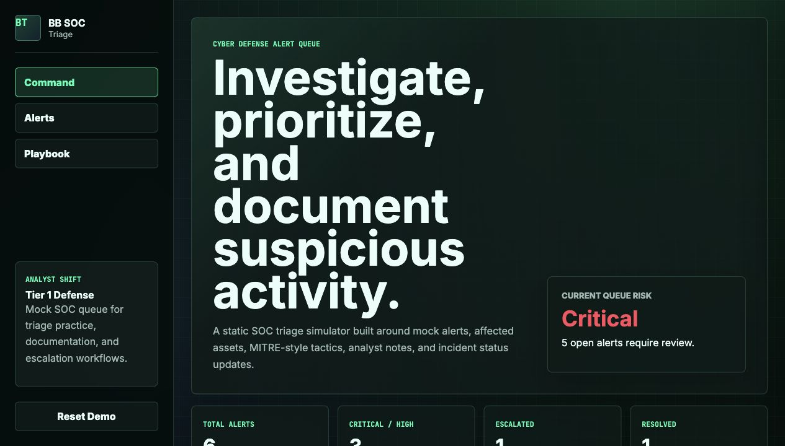
Cyber Defense Analyst
SOC Triage
Mock SOC alert queue for reviewing suspicious activity, prioritizing severity, mapping tactics, documenting analyst notes, and moving alerts through investigation.
|
Full-stack software engineer and QA engineer with a B.S. in Software Engineering from Western Governors University. I hold AWS Cloud Practitioner, CompTIA Network+, and ITIL Foundation certifications and currently support technical development at Kentish Publishing Company. My background covers web and mobile apps, API automation, manual testing, defect documentation, technical troubleshooting, and enterprise systems. Open to tech roles across software engineering, QA, help desk, technical support, and application support. Based between Greer, SC and Jacksonville, FL, and willing to relocate.
Years Experience
Projects Built
Certifications
B.S. Graduated
A practical mix of software engineering, testing, cloud, and cyber tools I use to build, debug, document, and improve real workflows.
Kentish Publishing Company, Remote
CenterWell Pharmacy
Supported high-volume pharmacy operations within enterprise platforms while maintaining strict data accuracy, compliance, and documentation integrity. Bridged pharmacy operations and IT support — documenting system defects, reproducing bugs, and escalating issues with detailed technical context.
Centene, OptumRx, Aetna
7+ years inside compliance-driven enterprise healthcare platforms. Roles involved diagnosing and documenting system defects, reproducing application errors, and collaborating cross-functionally on technical escalations. These experiences overlap directly with QA practices and gave me hands-on exposure to how large-scale systems behave under real-world conditions.
A focused project set covering alert analysis, infrastructure defense, and incident response. Each demo uses realistic mock data, tested JavaScript logic, local persistence, screenshots, and GitHub Pages deployment.

Mock SOC alert queue for reviewing suspicious activity, prioritizing severity, mapping tactics, documenting analyst notes, and moving alerts through investigation.
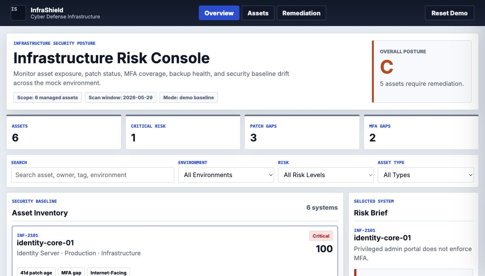
Infrastructure security console for reviewing asset exposure, patch gaps, MFA coverage, encryption, backup health, endpoint posture, and remediation priorities.
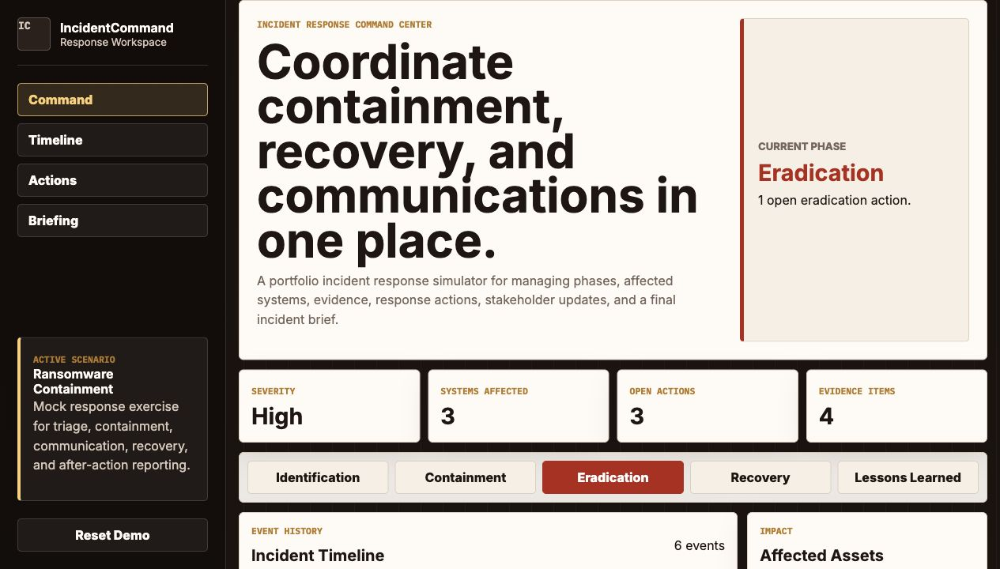
Incident response command center for coordinating phases, affected systems, response actions, evidence, stakeholder communications, recovery, and after-action reporting.
Multi-page personal finance app with overview metrics, transactions, budgets, savings pots, recurring bills, local persistence, and tested finance calculations.
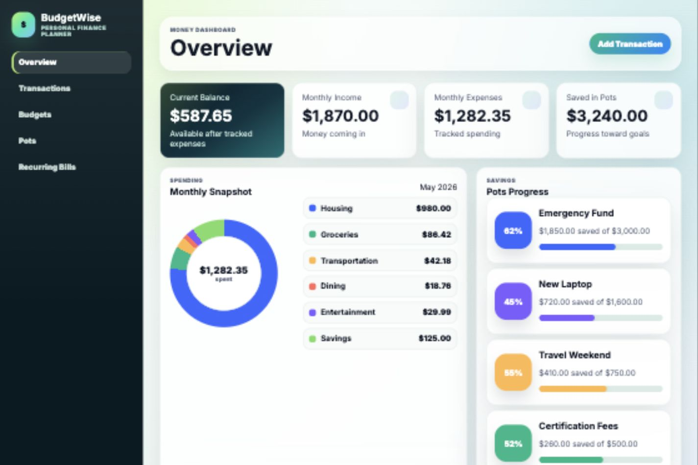
Full-stack e-commerce app with cart persistence, checkout flow, auth, product search, order history, and a companion mobile experience.
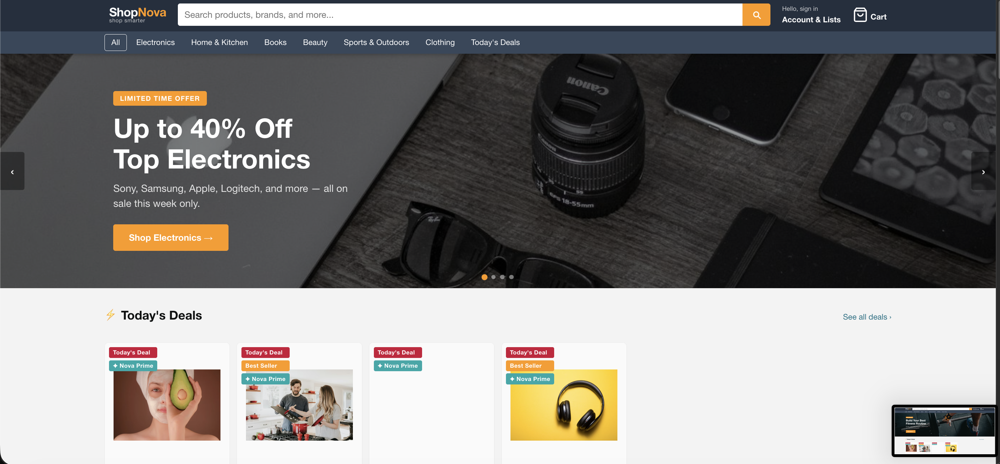
Mock HR/IT access request system with role-based views, approval queue, audit log, searchable records, metrics, and CSV reporting.
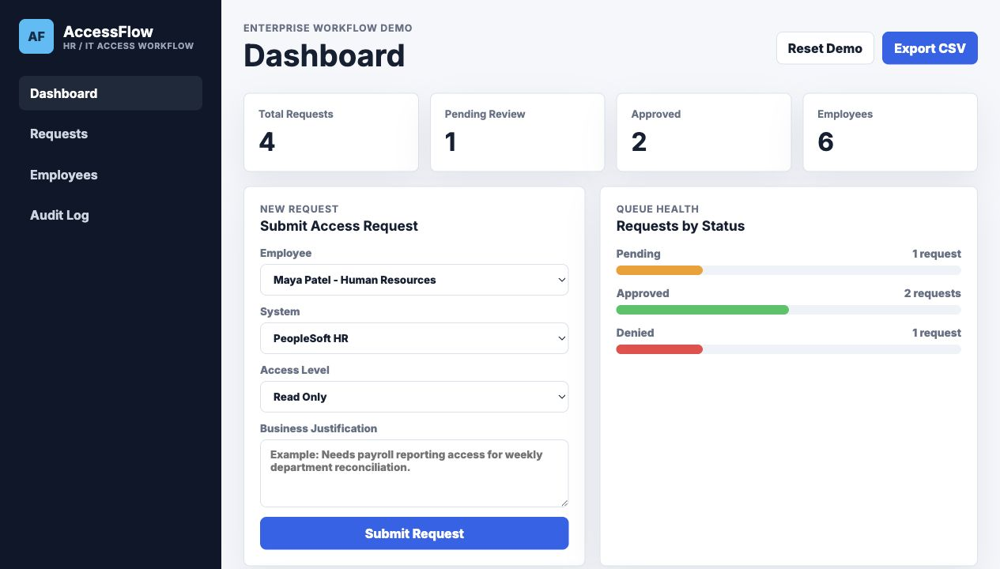
CRM-style case management dashboard with workflow lanes, case details, SLA tracking, owner workload, search filters, and a mock service layer.
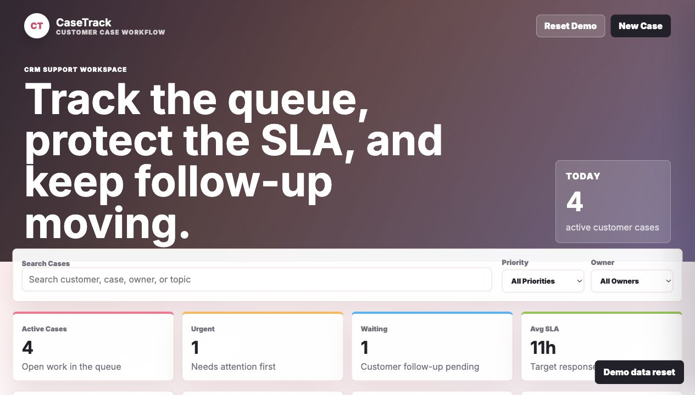
Mock cloud operations dashboard for service health, incidents, deployments, alert thresholds, and API-style data review with tested mock backend logic.
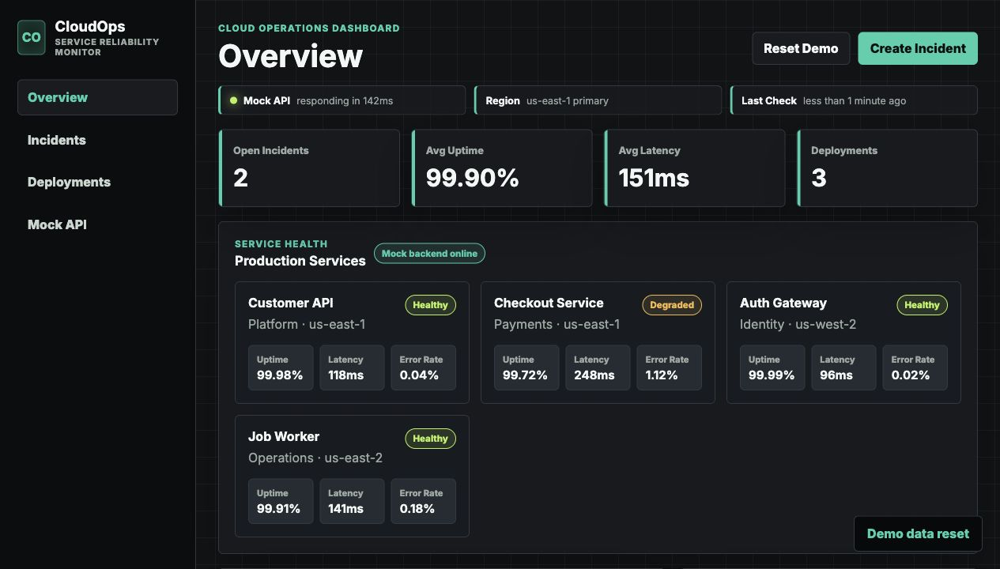
Daily word puzzle with custom tile scoring, repeated-letter handling, persistent stats, shareable results, and responsive keyboard controls.
A compact testing portfolio showing manual QA, API testing, mobile coverage, accessibility review, defect documentation, and lightweight automation across realistic app flows.
Happy paths, negative paths, edge cases, regression checks, and reusable test case sets.
Clear reproduction steps, severity, priority, environment details, and triage notes.
Customer impact, workarounds, suspected owner, escalation notes, and acceptance criteria.
Node.js smoke checks, CRUD coverage, API test plans, and results documentation.
Device matrix notes, exploratory testing, WCAG checks, and usability analysis.
Personal finance dashboard with five app views: overview, transactions, budgets, savings pots, and recurring bills. Includes local persistence, filters, budget progress, charting, and tests.
CRM-style customer case workflow app with status lanes, case detail drawer, owner workload, SLA timing, activity history, search filters, local storage, and tests.
Static cloud operations dashboard with service health, incident response, deployments, alert thresholds, environment switching, API-style mock responses, and tested service logic.
Mock enterprise access request app for HR/IT workflows. Includes role-based views, approvals, audit logging, request filters, metrics, CSV export, and local demo data.
Full-stack e-commerce platform built with React 18, TypeScript, and Vite. Features a 3-step checkout flow, cart with persistence, product search, auth, and order history. Extended with a React Native mobile app for iOS and Android.
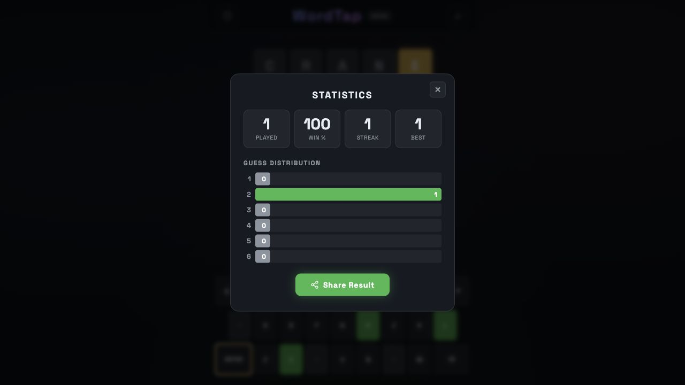
Daily 5-letter word game built with vanilla JavaScript. Features custom tile evaluation, repeated-letter scoring, local stats, share text, and mobile-friendly controls.

Conversational AI companion built with JavaScript and the OpenAI API. Offers four personality modes (Soft, Sassy, Pro, Wise) with topic-based prompts for career, relationships, habits, and more. GitHub Pages version runs as an interface demo; the full chat API is designed for Vercel.
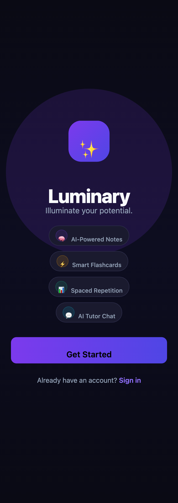
AI-powered study app with smart flashcards, spaced repetition, AI-powered notes, and an AI tutor chat. Built with a full-stack JavaScript architecture and deployed on GitHub Pages.
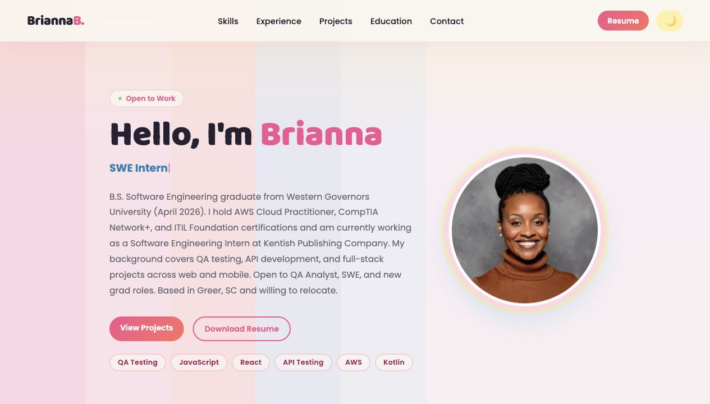
Designed and built from scratch using vanilla HTML, CSS, and JavaScript — no frameworks. Features dark mode, scroll-triggered animations, project filtering, a fully responsive layout, and SEO optimization. Deployed on GitHub Pages.
Western Governors University
2026Ultimate Medical Academy
Pharmacy Technician Track
2017IT Service Management
EarnedFull-stack software engineer and QA engineer with testing, cloud, cyber, troubleshooting, documentation, technical support, and enterprise systems experience.
Open to tech roles across software engineering, QA, help desk, technical support, and application support. Based between Greer, SC and Jacksonville, FL, and willing to relocate.